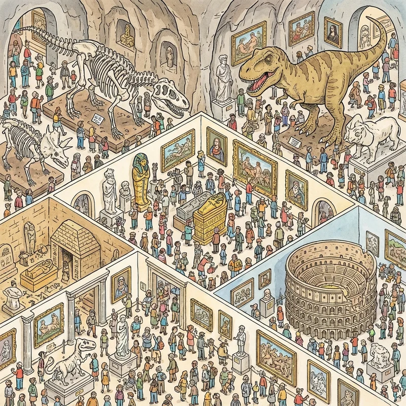

Where's Waldo Page
Where's Waldo pages are masterpieces of detailed illustration, each containing hundreds of characters and countless hidden elements. Over the decades, certain pages have become legendary among fans for their complexity, creativity, or sheer difficulty. This comprehensive guide explores the most famous Where's Waldo pages, what makes them special, and expert tips for solving even the trickiest scenes.
Most Iconic Where's Waldo Pages
Some pages have achieved legendary status in Where's Waldo history:
The Beach (Original Book)

Perhaps the most famous Where's Waldo page ever created, the beach scene from the original 1987 book set the standard for all future pages. This double-page spread features hundreds of beachgoers engaged in various activities – swimming, sunbathing, playing volleyball, building sandcastles, and more.
What makes this page special:
- Perfect balance of chaos and organization
- Multiple distinct activity zones
- Clever use of beach umbrellas and towels for hiding spots
- Introduces readers to the series' signature crowded-scene style
- Moderate difficulty level, perfect for beginners
The Department Store (Original Book)

This page showcases multiple floors of a bustling department store, with escalators connecting different sections. The vertical layout creates a unique visual flow different from most horizontal scenes.
Notable features:
- Multiple levels to search through systematically
- Various store departments (toys, clothing, furniture, etc.)
- Shoppers carrying bags that could obscure Waldo
- Interesting use of three-dimensional space
The Ski Slopes (Where's Waldo Now?)
A winter wonderland featuring skiers, snowboarders, ski lifts, and a lodge. The abundance of winter clothing and accessories creates exceptional camouflage challenges.
Challenges presented:
- Many characters wearing hats and scarves
- Red and white ski gear creating false positives
- Snow and white backgrounds reducing contrast
- Multiple elevation levels from mountain to valley
The Museum (Where's Waldo? The Wonder Book)
A meta page showing a museum filled with artwork and visitors. This self-referential scene plays with the concept of looking at pictures within pictures.
Clever aspects:
- Paintings within the scene add visual complexity
- Museum visitors studying art mirror readers studying the page
- Period artwork provides educational value
- Sophisticated composition appealing to all ages
Hollywood (In Hollywood)

Movie sets and film production scenes showcase Handford's creativity in depicting various film genres and production elements.
Highlights:
- Different movie sets (western, sci-fi, historical)
- Film crew and equipment add detail layers
- Pop culture references for adult enjoyment
- Dynamic action and movement throughout
Tips for Solving Difficult Pages
If you're stuck on a particularly challenging page, try these expert strategies:
The Grid Method
- Mentally divide the page into a 3x3 or 4x4 grid
- Search each section thoroughly before moving on
- Mark areas you've checked (mentally or with paper)
- Ensure complete coverage without skipping sections
The Spiral Technique
Start from one corner and spiral inward or outward in a circular pattern. This ensures you don't miss areas while maintaining a smooth visual flow.
Color Scanning
Train your eyes to recognize the specific shade of red in Waldo's shirt. Scan specifically for that color while ignoring other reds that don't match.
Look for Glasses
Sometimes Waldo's round glasses are more visible than his stripes. Scan for small circular shapes that might be his specs.
Check Unusual Positions
If standard searching fails, look in unexpected places:
- Very edges of the page
- Partially hidden behind foreground objects
- In background areas you might initially overlook
- Upside down or at odd angles
Take Breaks
If frustrated, set the book aside for a few minutes. Fresh eyes often spot what tired eyes miss.
Beyond Finding Waldo
Each page offers more than just finding the main character:
Additional Search Objectives
Most pages challenge readers to find:
- Woof (Waldo's dog): Often just his tail is visible
- Wenda: Waldo's companion in blue skirt
- Wizard Whitebeard: And his magic scroll
- Odlaw: The antagonist in yellow and black
- Specific objects: Books often list items to find
Hidden Jokes and Details
Handford fills pages with humorous moments and visual gags. Look for:
- Funny interactions between characters
- Anachronistic elements in historical scenes
- Visual puns and wordplay
- Characters breaking the fourth wall
- Recurring background characters across multiple books
Page-Specific Challenges
Different types of pages present unique difficulties:
Winter/Snow Scenes
Challenges: White background reduces contrast; many characters in heavy clothing and accessories
Strategy: Focus on the specific red shade; eliminate characters too tall/short
Night/Dark Scenes
Challenges: Reduced visibility; colors appear different in dark settings
Strategy: Look for shape and silhouette rather than color alone
Costume Party Scenes
Challenges: Many characters in disguises; striped costumes abound
Strategy: Remember Waldo's specific striped pattern and accessories
Historical Scenes
Challenges: Period clothing can obscure modern-looking Waldo
Strategy: Waldo maintains his anachronistic outfit; look for the contrast
Explore Every Page
Each Where's Waldo page is a unique artwork deserving careful exploration. Don't rush through just to find Waldo – take time to appreciate the detailed illustrations, discover hidden jokes, and enjoy the creativity packed into every inch of the page. The joy is in the journey, not just the destination!